인공지능 수학 · 고급 대수 · 고급 기하 · 고급 미적분 — 내용 체계 한 줄마다 바로 열리는 수업 자료와 3분 실습 미션을 붙였습니다. 강사 하진수(대전대신고등학교)
AI 수학 37차시 웹 열기 일상 속 수학 실험실 356종 열기 실습·설계 도구이 페이지가 가리키는 실험실 가운데 7단계 수업 모형과 학생 활동지를 갖춘 것만 모았습니다. 눌러서 열면 곧장 한 차시가 됩니다.
2026. 9. 30. 에 고급 대수·기하·미적분 48종을 더해 모두 70종이 한 차시 수업의 꼴을 갖추었습니다. 실험실을 열면 단계 표가 먼저 뜨고, 앞 단계를 마쳐야 다음이 열립니다 — 조작만 하다 끝나지 않게 하는 장치입니다.
…/math-lab/#lab=249 처럼 번호를 붙이면 LAB 249 가 열린 채로 뜹니다. 탭까지 지정하려면 #tab=p2(바이브 코딩) · #tab=p4(수업·평가 설계).…/AI_MATH/#sim 처럼 차시 이름을 붙이면 그 차시로 바로 갑니다. 첫 로딩에 몇 초 걸립니다(37차시를 한 번에 읽어 옵니다).| 시간 | 차시 | 무엇을 하는가 | 가지고 나가는 것 |
|---|---|---|---|
| 50분 | 1차시 · 인공지능 수학 | 5개 영역을 「성취기준 → 차시 웹 → 3분 미션」으로 훑고, 프로젝트형 평가와 세특까지 한 번에 봅니다. | 단원 하나의 수업 설계표(표제부·STEP1~3) 초안 |
| 100분 | 2차시 · 고급 대수·기하·미적분 | 세 과목의 내용 체계를 실험실로 체험 → 하나를 개조 → 없는 실험실 하나를 생성형 AI로 만듭니다. | 과목별 수업 연결표 + 내가 만든 실험실 1종(HTML) + 루브릭 |
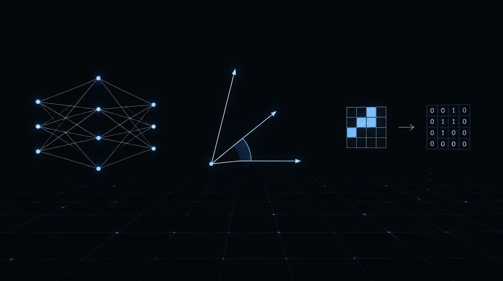
| 영역 | 내용 요소(지식·이해) | 성취기준 요지 | AI 수학 차시 | 수학 실험실 | 3분 미션 · 발문 | 평가 포인트 |
|---|---|---|---|---|---|---|
| Ⅰ 인공지능과 빅데이터 | 인공지능의 개념과 역사 · 인공지능에서 수학의 활용 · 빅데이터의 개념과 활용 | [12인수01-01~03] 인공지능의 발전 과정과 수학의 역할, 빅데이터의 특성과 활용을 사례로 설명 | 1차시 개념과 역사2차시 학습 방식4차시 퍼셉트론5차시 편향6차시 데이터·윤리 | LAB 355 혼동행렬LAB 02 베이즈 분류기 | 5차시 편향 — 데이터 구성을 바꿔 「정확도 95%의 함정」을 직접 만든다. 발문: "정확도가 높은데 왜 쓸모없는 모델이 되었나?" |
혼동행렬 4칸을 학교 데이터로 채우고 정확도·재현율을 말로 해석 |
| Ⅱ 텍스트 데이터 처리 | 텍스트 데이터의 표현 · 텍스트 데이터의 분석 | [12인수02-01~03] 텍스트를 집합·벡터로 표현하고, 벡터 연산과 유사도로 문서를 비교·분석 | 7·8차시 집합·벡터9차시 TF-IDF10차시 벡터 연산11차시 유사도13차시 리뷰 프로젝트 | LAB 18 코사인 유사도LAB 189 원-핫·빈도수 | 11차시 유사도 — 같은 데이터에서 거리 1위와 방향 1위가 뒤집히는 순간을 만든다. 발문: "왜 유튜브는 거리가 아니라 각을 잴까?" |
내적 공식 a·b=|a||b|cosθ 를 추천 근거 문장으로 번역 |
| Ⅲ 이미지 데이터 처리 | 이미지 데이터의 표현 · 이미지 데이터의 분석 | [12인수03-01~03] 이미지를 행렬로 표현하고, 행렬 연산으로 변환·분류 원리를 설명 | 14차시 이미지=행렬16차시 전치17차시 행렬의 곱18차시 손글씨 분류20차시 CNN 종합 | LAB 19 합성곱 필터LAB 100 행렬과 변환 | 17차시 행렬의 곱 — 0·1 행렬 하나로 사진을 한 칸 옮기고 좌우로 뒤집는다. 어느 쪽에 곱하느냐를 표로 발견. 발문: "AB 와 BA 가 다른 사진을 만든 이유는?" |
3×3 커널 하나가 「특징 추출」임을 손계산(9칸 곱의 합)으로 확인 |
| Ⅳ 예측과 최적화 | 데이터에 기반한 예측 · 최적화 | [12인수04-01~04] 확률·추세선으로 예측하고, 손실함수를 정의해 경사하강법으로 최적화 | 21·22차시 확률·스팸23·24차시 추세선25·27·28차시 손실·미분·경사하강29차시 아이스티 예측 | LAB 16 경사하강법LAB 15 최소제곱LAB 353 정규방정식 | 28차시 경사하강법 — 학습률을 올려 발산시키고, 수렴 조건을 한 문장으로 쓴다. 발문: "미분계수의 부호가 왜 '갈 방향'이 되는가?" |
L(a) 를 이차함수로 세우고 최솟값을 손으로 구한 값과 스프레드시트 값 일치 확인 |
| Ⅴ 인공지능과 수학 탐구 | 합리적 의사 결정 · 인공지능과 수학 탐구 | [12인수05-01~02] 인공지능을 활용한 의사 결정 사례를 분석하고 수학 탐구를 수행·공유 | 31차시 탐구의 다섯 걸음32차시 의사 결정33차시 데이터·모델링34차시 100초 발표 | LAB 03 확산 시뮬레이터LAB 15 회귀 | 34차시 프로젝트 — 「우리 동네 문제 해결 AI 모델」 발표 루브릭을 읽고, 내 학교 주제 하나를 적는다. 발문: "데이터 출처·가공을 어디까지 밝혀야 공정한가?" |
주제·데이터·수학 원리·검증·한계 5요소 보고서 + 100초 발표 + 동료평가 |
| Ⅵ 생성형 AI (선택 심화) | 평가 제외 심화 — 언어를 벡터로, 잡음에서 그림으로, 확률 기계의 한계(환각·저작권·편향) | 35차시36차시37차시 | — | 교실 규칙 만들기 — 생성형 AI 로 과제를 할 때 밝혀야 할 것 3가지 | 윤리 점검표(수행 태도) | |
교사가 할 일은 「디딤 영상 URL 연결」과 「발문 고르기」뿐입니다. 손계산 장면(작은 표·작은 행렬)을 반드시 남기세요 — 자료만 만지면 수학이 남지 않습니다.
「디지털 코딩 도구를 활용한 우리 동네 문제 해결 AI 모델 형성 및 분석」 (대전대신고 3학년, 80팀 출품·70팀 시상)
| 루브릭 요소 | 상 | 하 |
|---|---|---|
| 데이터 출처·가공 | 출처·전처리 과정을 재현 가능하게 기록 | 출처 불명, 가공 과정 없음 |
| 수학 원리의 자기주도 탐구 | 모델의 대수식(손실·가중치·유사도)을 손계산 예로 설명 | 도구 출력만 나열 |
| 모델 검증 | 분리 검증·혼동행렬·RMSE 등 수치로 한계 제시 | 검증 없음 |
| 공유·윤리 | 편향·개인정보 점검, 100초 발표·동료평가 참여 | 점검 없음 |
세특 문장 구조: 맥락(문제) → 수학 원리(식) → 도구·검증 → 한계·확장. 네 칸이 다 있으면 문장이 저절로 나옵니다.
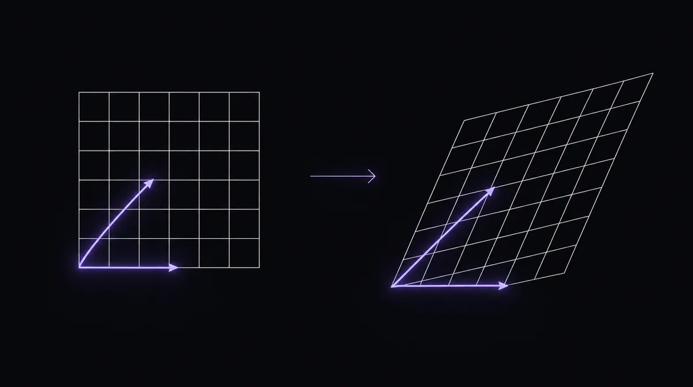
| 영역 | 내용 요소 | 성취기준 요지 | 수학 실험실 | 3분 미션 · 발문 | 수업 장면 · 평가 |
|---|---|---|---|---|---|
| 벡터공간 | 벡터공간 | 벡터공간의 뜻과 성질, 부분공간의 뜻과 성질을 탐구 (평면·공간벡터를 벡터공간으로 일반화) | LAB 253 생성LAB 254 부분공간 판정LAB 255 일차독립과 차원 | LAB 253 — 두 화살표를 나란히 만들어 평면이 직선으로 무너지는 순간을 만든다. 발문: "벡터를 하나 더 넣으면 차원이 늘어나나?" |
span·일차독립을 「만들 수 있는 방향의 개수」로 학생 말로 정의하기 |
| 벡터의 내적과 정사영 | 정규직교기저를 이해하고 그람-슈미트 직교화로 구하기 | LAB 259 그람-슈미트LAB 165 정사영의 길이LAB 260 최소제곱과 직각 | LAB 259 — 두 번째 벡터에서 (v·u)/(u·u)u 만큼 덜어 낸 뒤 내적이 0 이 되는지 손으로 확인. 발문: "왜 '딱 그만큼'만 빼야 직각이 되나?" |
2차원 손계산 → 3차원은 스프레드시트로 확장(과정 평가) | |
| 행렬과 선형변환 | 행렬과 연립일차방정식 | 행렬이 연립일차방정식을 푸는 도구임을 알고 해의 존재·개수를 판정 | LAB 247 역행렬과 해의 개수LAB 252 가우스 소거법LAB 248 행렬식의 뜻 | LAB 252 — 피벗이 0 인 순간을 만들어 행 교환이 왜 필수인지 본다. 발문: "컴퓨터는 어떤 순서로 연립방정식을 풀까?" |
ad−bc=0 일 때 두 직선의 위치 관계를 그림과 식으로 함께 서술 |
| 행렬과 선형변환 | 선형변환을 행렬과 연결하고, 대칭·닮음·회전변환과 행렬의 관계를 설명 | LAB 100 행렬과 변환LAB 257 선형변환과 합성LAB 101 곱의 비가환LAB 94 복소평면 회전 | LAB 100 — 기저 화살표 두 개를 끌어 90° 회전행렬을 만들어 유령 도형에 겹친다. det=0 의 붕괴까지. 발문: "열이 곧 기저의 목적지란 무슨 뜻인가?" |
회전→확대와 확대→회전을 행렬곱 두 개로 계산해 AB≠BA 서술 | |
| 행렬의 대각화 | 행렬의 대각화 | 고윳값·고유벡터를 구하고 행렬을 대각화 | LAB 249 고유벡터와 고윳값 | LAB 249 — 방향을 돌리며 「휘지 않는 화살표」 두 개를 찾고, λ²−5λ+5=0 을 손으로 풀어 화면의 배율과 견준다. 발문: "변환이 붙잡아 두는 방향은 몇 개인가?" |
특성방정식 풀이(손) ↔ 화면 배율(도구) 일치 확인을 보고서 표로 |
| 대각화의 활용 | 대각화를 활용해 여러 문제 해결 (피보나치 수열, 간단한 마르코프 체인) | LAB 251 피보나치의 행렬LAB 258 마르코프 정상상태LAB 261 주성분과 차원 축소 | LAB 258 — 출발 분포를 바꿔도 같은 곳으로 모이는 것을 보고, π=Pπ 를 고윳값 1 의 고유벡터로 다시 읽는다. 발문: "오래 지나면 출발점은 잊히는가?" |
Aⁿ 을 대각화로 계산하는 과제 → LAB 261 로 AI(PCA)까지 확장 탐구 |
| 도입 8' | 페이지랭크·고객 이동 사례. "출발점이 결과를 정할까?" 예상 먼저 쓰기 |
| 전개1 15' | LAB 258 조작 — 전이행렬 거듭제곱, 출발 분포 3종에서 같은 극한 관찰, 기록표 |
| 전개2 15' | 손계산 2×2 전이행렬의 고윳값 1 고유벡터 → π 계산 → 화면값과 일치 확인 |
| 정리 12' | "왜 고윳값 1 인가"를 Pπ=π 로 설명 · 형성평가 2문항 · 세특 문장 한 줄 쓰기 |
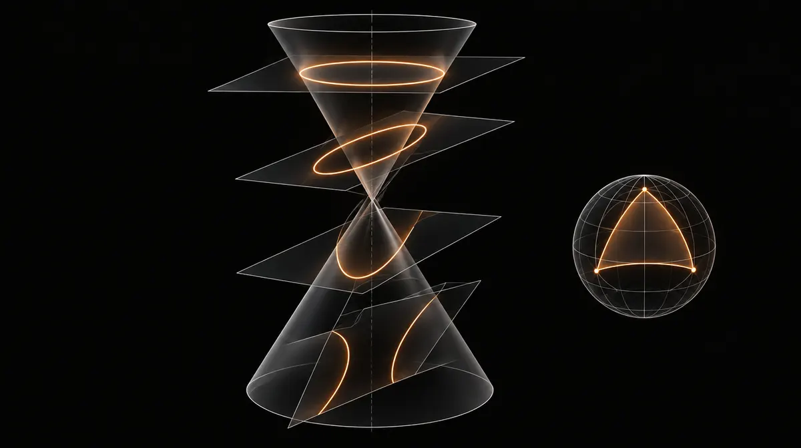
| 영역 | 내용 요소 | 성취기준 요지 | 수학 실험실 | 3분 미션 · 발문 | 수업 장면 · 평가 |
|---|---|---|---|---|---|
| 작도와 평면기하 | 작도 | 자와 컴퍼스 작도, 작도 가능성의 대수적 설명(각의 3등분 등) | LAB 66 각의 이등분선 작도LAB 104 종이접기 3등분LAB 31 삼각형의 합동·작도 | LAB 104 — 자·컴퍼스로 안 되는 3등분을 접기로 해 본다. 발문: "안 되는 것을 안 된다고 어떻게 증명하나?"(체의 확장 맛보기) |
작도 절차를 「왜 그 점이 그 점인가」 근거와 함께 서술 |
| 평면기하 | 평면도형의 성질에 대한 정리를 논리적으로 증명 (사영·복비 등 확장 가능) | LAB 335 소실점과 무한원점LAB 285 복비LAB 237 대칭과 문양 | LAB 335 — 선의 위치가 아니라 방향이 소실점을 정함을 확인. 발문: "평행선이 만나 보이는데 정말 만나는가?" |
증명 과제(체바·메넬라오스 등)를 GeoGebra 로 실험한 뒤 증명 쓰기 | |
| 곡선의 성질 | 자취 | 조건을 만족하는 점의 자취를 구하고 매개변수 방정식으로 표현(사이클로이드 등) | LAB 170 원뿔곡선의 통일LAB 157 포물선의 초점LAB 158 타원LAB 160 쌍곡선 항법LAB 161 접선의 조건 | LAB 170 — 원뿔을 자르는 각만 바꿔 원→타원→포물선→쌍곡선을 차례로 만들고 이심률 경계를 적는다. 발문: "세 곡선은 다른 도형인가, 같은 도형의 다른 얼굴인가?" |
빈칸: 사이클로이드 실험실 — 프롬프트 카드 ②로 오늘 제작 |
| 정칙곡선과 곡률 | 좌표공간의 곡선을 매개변수로 표현하고 곡률·곡률반경을 구함 | LAB 180 음함수·매개변수 미분LAB 184 속도·가속도 벡터 | LAB 184 — 속력이 일정한데 가속도가 있는 원운동을 보고, 가속도 벡터의 방향을 말로 쓴다. 발문: "가속도 크기가 곡률과 어떻게 이어질까?" |
빈칸: 곡률원 실험실(κ=|x'y''−y'x''|/(x'²+y'²)^{3/2}) — 프롬프트 카드 ② | |
| 곡면의 성질 | 이차곡면 | 이차곡면(타원면·일엽/이엽 쌍곡면·이차뿔면)의 식과 그래프를 연결 | LAB 289 회전면 만들기LAB 286 평면의 방정식LAB 287 두 평면이 이루는 각 | LAB 289 — 같은 곡선을 다른 축으로 돌려 전혀 다른 입체를 만든다. y²+z²=f(x)² 를 손으로 쓴다. 발문: "쌍곡선을 어느 축으로 돌리면 일엽, 어느 축이면 이엽인가?" |
GeoGebra 3D 로 단면(z=k) 을 잘라 이차곡선 계열 확인 → 보고서 |
| 구면기하 | 구면코사인법칙·구면사인법칙을 이해하고 활용 | 실험실 없음 | 만들기 — 「지구 위 두 도시의 최단 거리」 실험실: 위도·경도 입력 → 대원 거리 → 구면코사인법칙 확인. 발문: "평면 삼각형의 내각의 합이 구면에서는 왜 180° 를 넘나?" |
빈칸: 구면삼각형 실험실 — 프롬프트 카드 ③ |
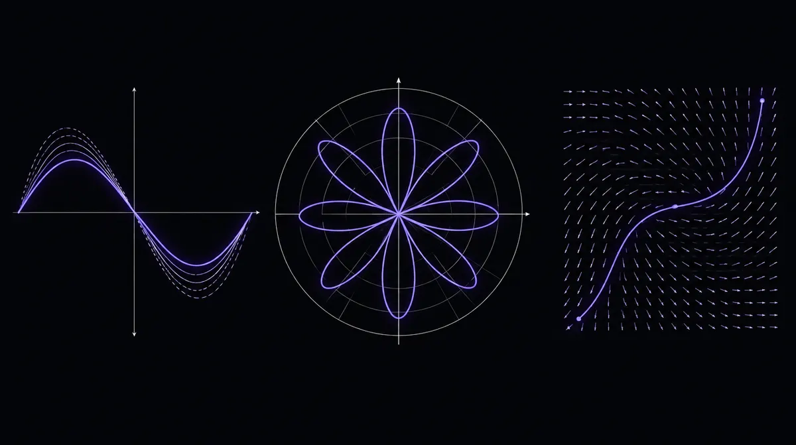
| 영역 | 내용 요소 | 성취기준 요지 | 수학 실험실 | 3분 미션 · 발문 | 수업 장면 · 평가 |
|---|---|---|---|---|---|
| 미적분의 활용 | 미분의 활용 | 쌍곡선함수·역쌍곡선함수의 도함수, 매개변수·음함수 미분의 활용 | LAB 239 현수선과 포물선LAB 180 음함수·매개변수 미분LAB 184 속도·가속도 | LAB 239 — 늘어진 줄이 포물선인지 현수선(cosh)인지 눈으로 구분하고 급수 전개로 차이를 본다. 발문: "2차항까지는 같은데 왜 갈라지나?" |
cosh·sinh 의 도함수를 정의(e^x 조합)로 유도하는 손계산 |
| 적분의 활용 | 이상적분을 이해하고 구함, 쌍곡선함수의 부정적분, 넓이·부피의 활용 | LAB 141 회전체와 원판LAB 263 p-급수와 적분판정 | LAB 263 — ∫1/xᵖ 의 넓이가 유한한지 p 를 움직이며 본다(이상적분의 수렴). 발문: "끝없이 뻗는 영역의 넓이가 유한할 수 있나?" |
이상적분 = 극한으로 정의하기(교과서 표기 그대로 쓰기) | |
| 극좌표와 극곡선 | 극좌표 | 극좌표를 이해하고 직교좌표와의 관계를 설명 | LAB 273 극좌표와 야코비안LAB 316 오일러 공식LAB 317 복소함수 z² | LAB 273 — 작은 조각의 넓이가 r·dr·dθ 인 이유를 바깥쪽 조각이 커지는 그림으로 확인. 발문: "좌표를 바꾸면 넓이도 바뀌는가?" |
점 (r,θ)↔(x,y) 변환표 + 같은 곡선의 두 식 비교 |
| 극곡선 | 극곡선의 접선, 길이, 극곡선으로 둘러싸인 영역의 넓이 | 실험실 없음 | 만들기 — 「r=1+cosθ 심장형 그리기」 실험실: θ 슬라이더로 점이 찍히고 부채꼴 조각 넓이 ½r²dθ 가 쌓이는 화면. 발문: "왜 넓이가 ½∫r²dθ 인가?" |
빈칸: 극곡선 실험실 — 프롬프트 카드 ④ | |
| 급수 | 급수의 수렴과 발산 | 단조수렴정리, 여러 판정법, 절대수렴·조건수렴, 교대급수판정법 | LAB 22 급수의 부분합LAB 102 카드 쌓기와 조화급수LAB 263 p-급수 | LAB 102 — 카드 4장으로 맨 위 카드를 책상 밖 허공에 띄운다. ½Hₙ 이 왜 무한히 커지는지 적는다. 발문: "항이 0 으로 가는데 왜 합은 무한한가?" |
수렴 필요조건 vs 충분조건을 반례(조화급수)로 서술 |
| 멱급수와 테일러급수 | 멱급수와 수렴반경, 테일러다항식·테일러급수, 근삿값(sin 20° 등)과 극한 계산 | LAB 23 테일러 근사LAB 264 수렴반경LAB 316 오일러 공식 | LAB 23 — 3차·5차 테일러다항식으로 sin 20° 를 손으로 구하고 계산기 값과 오차를 잰다. ln(1+x) 로 바꿔 수렴반경 밖에서 무너지는 것을 본다. 발문: "항을 늘리면 늘 좋아지는가?" |
오차의 상한(나머지항)을 어림하는 과정 평가 | |
| 미분방정식 | 미분방정식 | 미분방정식의 뜻, 방향장으로 해 표현, 변수분리형·선형 미분방정식의 해 | LAB 186 미분방정식 맛보기(기울기장)LAB 16 경사하강법 | LAB 186 — 같은 규칙에서 출발점만 바꿔 다른 곡선을 얻는다. 초기조건이 무엇을 정하는지 쓴다. 발문: "규칙 하나로 미래가 정해지나?" |
y'=ky 를 변수분리로 풀고 방향장 위에 해 곡선을 겹쳐 확인 |
| 미분방정식의 활용 | 인구·감염·냉각 등 현상을 미분방정식으로 모델링하고 해석 | LAB 03 확산 시뮬레이터(지수·로지스틱)LAB 11 복리와 72의 법칙 | LAB 03 — 지수 모형이 무너지고 로지스틱이 맞는 지점을 데이터로 찾는다. 발문: "왜 성장에는 상한이 있고, 식에는 (1−y/K) 가 붙나?" |
모델 선택 근거 + 매개변수 추정 + 예측 오차 보고서(탐구 평가) |
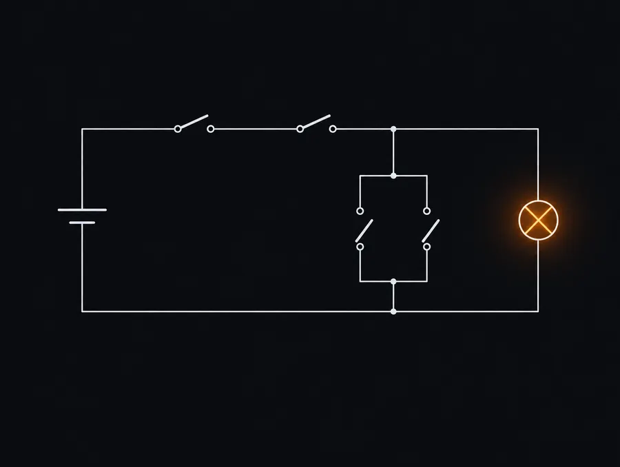
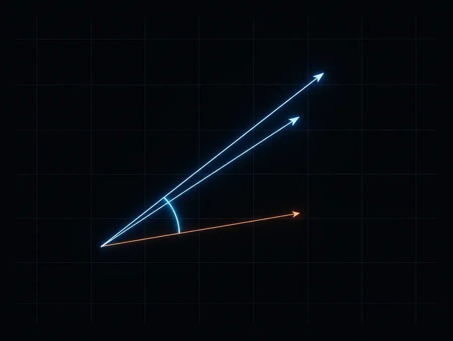
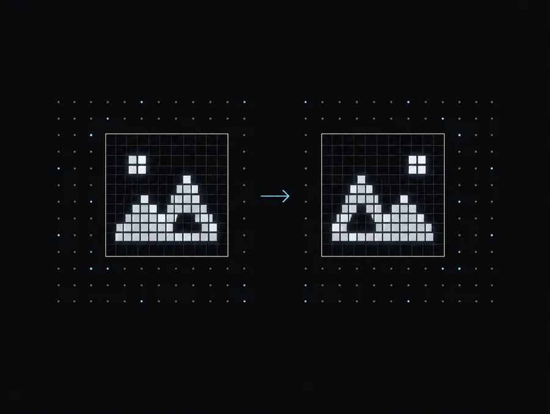
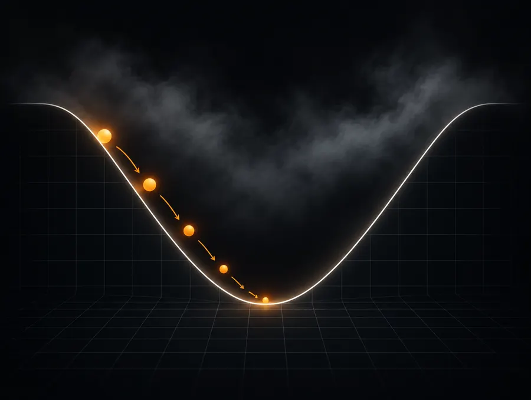
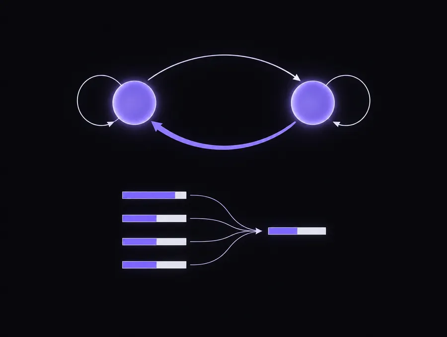
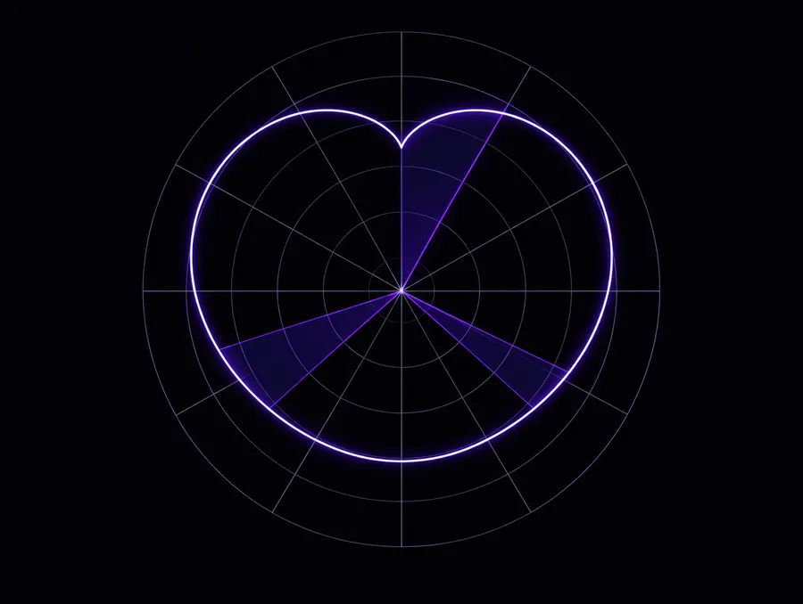
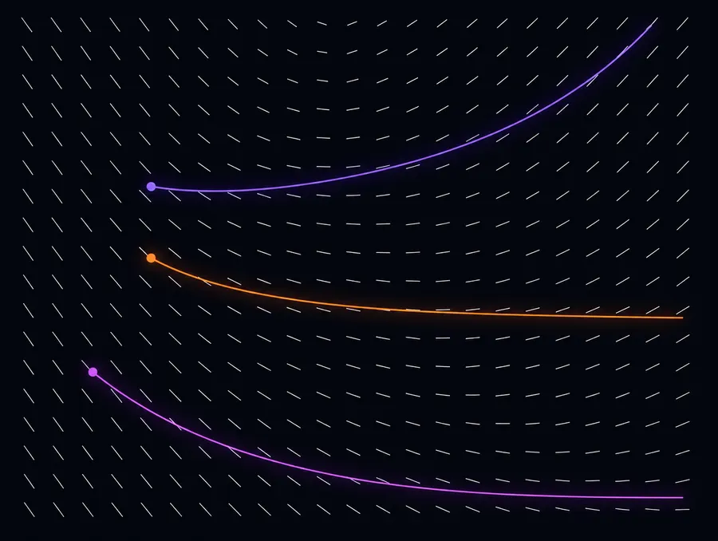
| 시간 | 내용 | 방법 |
|---|---|---|
| 0–15' | 전문 교과 신설 과목의 위상 · 편성 방식 · 선이수 위계(표) · 세 과목 내용 체계 한눈에 | 강의 |
| 15–35' | 고급 대수 — 연결표 읽기 → 실습 사다리(LAB 100 → 249 → 생성 Aⁿ) | 실습·사례 |
| 35–55' | 고급 기하 — 연결표 읽기 → 실습 사다리(LAB 170 → 160 → 생성 곡률원) | 실습·사례 |
| 55–60' | 휴식 | |
| 60–80' | 고급 미적분 — 연결표 읽기 → 실습 사다리(LAB 23 → 264 → 생성 극곡선) | 실습·사례 |
| 80–95' | 교수·학습 자료 개발 실습 마무리 — 내 실험실 7라운드 완주 · 지도안 6칸 · 루브릭 4요소 | 실습·토의 |
| 95–100' | 학교 편성 시 유의점 · 질의응답 · 모음집(탭⑤)에 결과물 올리기 | 토의 |
실험실 탭② 「바이브 코딩 실습」은 인터넷 없이도 7라운드를 시뮬레이션합니다. 실제 생성형 AI 계정이 있으면 같은 프롬프트를 그대로 쓰면 됩니다.
| 지도안 6칸 | ① 성취기준 ② 도입 발문(실생활 질문) ③ 조작 미션(무엇을 만지나) ④ 손계산 장면(작은 표·작은 행렬) ⑤ 판정 기준(숫자) ⑥ 정리 발문 |
|---|---|
| 루브릭 4요소 | 수식 유도의 정확성 · 손계산↔도구 결과의 일치 검증 · 결과의 재현성(시드·기록표) · 해석과 한계·확장 |
| 세특 4단 | 맥락(문제) → 수학 원리(식) → 도구·검증 → 한계·확장. 네 칸이 채워지면 문장은 저절로 나온다 |
이 페이지는 단일 HTML 파일이며 외부 라이브러리·저장소를 쓰지 않습니다. 인쇄(Ctrl+P)하면 탭이 모두 펼쳐져 출력됩니다.